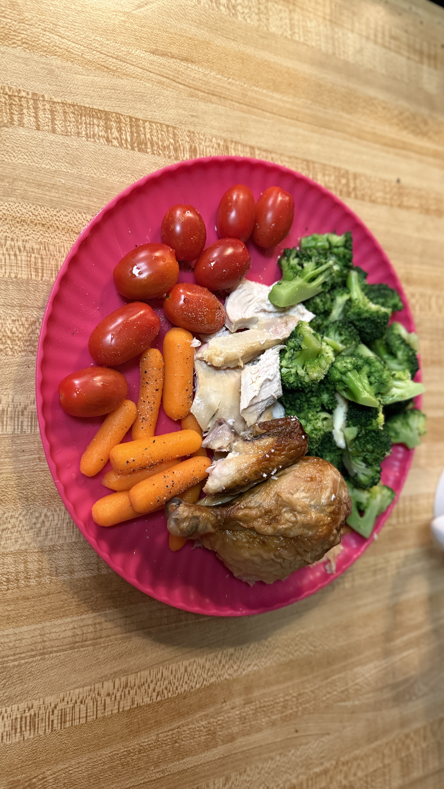

September 5, 2026
Chicken, Broccoli & Carrots Plate
Ingredients
Chicken · broccoli · baby carrots · cherry tomatoes
How to prepare
- Season and roast the chicken until the skin is golden and the meat is cooked through.
- Slice extra white meat and place it beside the drumstick.
- Steam the broccoli until tender-crisp.
- Serve with baby carrots and cherry tomatoes. Season the carrots lightly with pepper.
- Serve immediately.